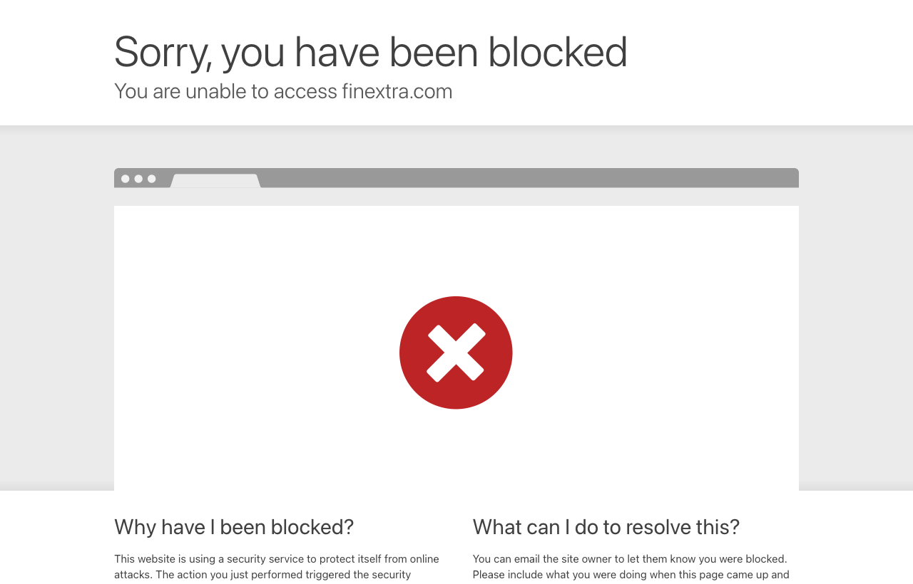

06 Finextra 보도일 2026.09.10
나스닥, 토큰화 주식 협력으로 Payward에 1억달러 투자

이번 소식의 핵심은 투자와 협력이다. 나스닥은 Payward에 1억달러를 넣었다. 배경으로는 토큰화 주식 시장 인프라 파트너십이 제시됐다. 다만 본문 발췌가 비어 있어 확인되는 정보는 많지 않다.
무슨 일이 있었나
나스닥의 벤처 투자 부문이 토큰화 시장 인프라 협력의 일환으로 Payward에 1억달러를 투자했다. Payward는 Kraken의 모회사로 소개됐다.
원문 발췌에는 여기까지만 나온다.
왜 지금 나왔나
원문은 배경을 밝히지 않았다.
맥락 읽기
확인되는 사실은 전통 거래소 운영사의 투자와 토큰화 주식 인프라 협력이다. 원문 발췌에는 발행 구조, 거래 방식, 수탁 체계, 일정이 없다.
국내와의 접점
원문은 국내 적용에 대해 언급하지 않았다.
우리 업무로 옮기면
토큰증권이나 디지털 자산 연계를 보는 팀은 거래소 사업자가 어떤 레이어에 투자하는지 살펴볼 필요가 있다. 특히 주문체결, 수탁, 장부, 청산 중 어디를 공동 구축하는지에 따라 시스템 요구가 달라진다.
이번 건은 정보가 부족하다. 그래서 당장 개발 일정을 잡기보다 아래 질문을 먼저 정리하는 편이 낫다.
- 토큰화 주식이 사설 장부에서 도는지, 기존 증권 인프라와 연결되는지
- 투자 대상이 거래 플랫폼인지, 수탁·청산 같은 후선 인프라인지
- 기관 고객용 상품인지, 개인 대상 유통까지 포함하는지
관련 후속 보도나 공식 발표가 나오면 계좌 체계, 권리 처리, 결제자산, 규제 주체를 우선 확인해야 한다.
주요 용어
토큰증권(Tokenised securities): 증권의 권리와 거래를 토큰 형태로 표현한 자산 시장 인프라(Market infrastructure): 거래, 청산, 결제, 수탁을 처리하는 기반 체계 수탁(Custody): 고객 자산을 보관하고 이동을 통제하는 업무 유동성(Liquidity): 사고팔고 싶을 때 거래가 성사되기 쉬운 정도
원문 정보
제목: Nasdaq invests $100m in Payward as part of tokenised equities partnership
보도일: 2026.09.10